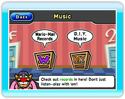
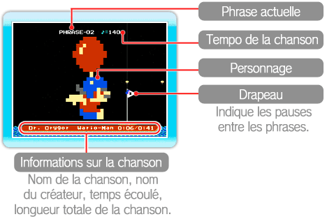
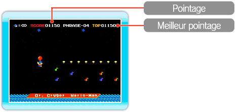

Vous pouvez écouter des disques dans la section Music du Wario-Man Super Store (grand magasin Wario-Man).

● Menu de la section Music
Pointez le curseur sur l’une des deux options du menu et appuyez sur  .
.
·Wario-Man Records (disques Wario-Man)
Dans cette section, vous pouvez écouter les disques préinstallés de WarioWare: D.I.Y. Showcase ou les utiliser pour jouer à un jeu. Sélectionnez un disque et appuyez sur  (jouer).
(jouer).
·D.I.Y. Music (musique D.I.Y.)
Les disques reçus dans le Distribution Center (centre de distribution) sont stockés ici. Vous pouvez les utiliser de la même façon que vous utilisez les disques de la section Wario-Man Records. Notez bien que vous pouvez placer le curseur sur les disques et appuyer sur et  en même temps pour les prendre et les placer sur une autre étagère, ou dans une autre case de la même étagère. Vous pouvez stocker jusqu’à 72 disques dans la section D.I.Y. Music. Pour en supprimer un, sélectionnez-le et appuyez sur
en même temps pour les prendre et les placer sur une autre étagère, ou dans une autre case de la même étagère. Vous pouvez stocker jusqu’à 72 disques dans la section D.I.Y. Music. Pour en supprimer un, sélectionnez-le et appuyez sur  (supprimer).
(supprimer).
Note : Vous ne pouvez pas récupérer les disques que vous avez supprimés.
● Comment utiliser les disques
Une fois que vous avez sélectionné un disque, indiquez si vous souhaitez l’écouter en appuyant sur (écouter), ou l’utiliser en tant que jeu en choisissant l’option (jouer).
·Listen (écouter)
Choisissez ce mode pour écouter le disque. Vous pouvez placer le curseur sur le personnage à l’écran et appuyer sur pour le prendre. Déplacez le personnage vers la gauche pour ralentir le tempo, et vers la droite pour l’accélérer.
Note : Le personnage se déplace automatiquement vers la droite. Vous ne pouvez pas inverser cette direction.

·Play (jouer)
Contrôlez le personnage à l’écran et touchez aux notes de musique et aux marqueurs de rythme pour jouer les sons correspondants et augmenter votre pointage.
Note : Évitez les étoiles, les poissons, et ne tombez pas dans l’eau, sinon, vous perdrez le contrôle du personnage durant un petit moment.

Commandes

Gauche/Droite |
Se déplacer |
|
|
Monter rapidement |
En bas |
Redescendre rapidement |
|
 |
Monter |
 |
 |
 |
 |
Compositions utilisées
| Compositeur |
Chanson |
| Johann Strauss Sr. |
Radetzky March |
| Alexander Borodin |
Polovetsian Dances |
| E. Humperdinck |
Hansel and Gretel |
| Richard Wagner |
The Mastersingers of Nuremberg |
| Felix Mendelssohn |
A Midsummer Night's Dream |
Chanson traditionnelle
américaine |
Oklahoma Mixer |
|
 |
 |
 |
 |